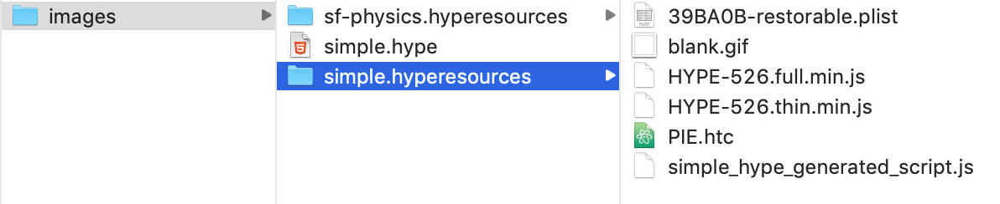

Multimedia example
This page shows how to embed an HTML5 animation created with Tumult Hype into an AsciiDoc topic. For a more complex example, see * Animation that uses Physics
Tumult Hype is a powerful animation tool which was originally developed to create web ads. Web designers have since adopted Hype to create animations for learning, entertainment, and other use cases. See Tumult.com.
Source Code
To implement a Hype animation:
-
Copy all necessary hype resources to the module’s images folder.
 -
Copy the code below into an AsciiDoc file.
++++ <div id="simple_hype_container" style="margin:0px;position:relative;width:468px;height:60px;overflow:hidden;" aria-live="polite"> <script type="text/javascript" charset="utf-8" src="../asciidoctor/_images/simple.hyperesources/simple_hype_generated_script.js?19166"></script> </div> ++++ -
In the 2nd line of code, change the name of your module folder, the name of the directory that Hype created, and the name of the JavaScript file.